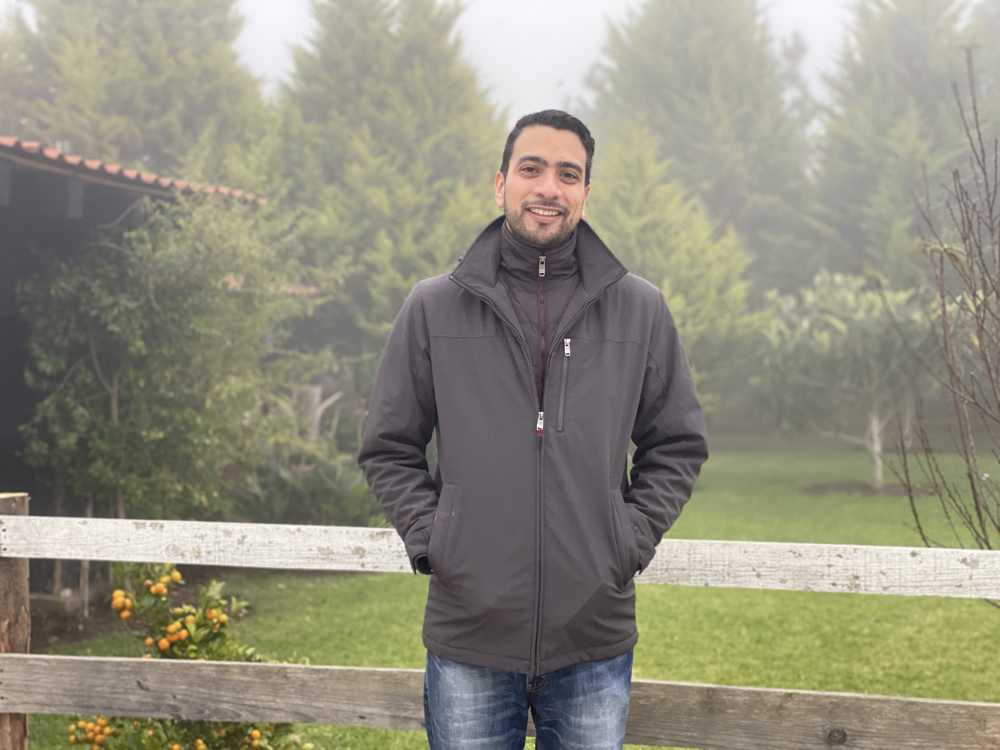
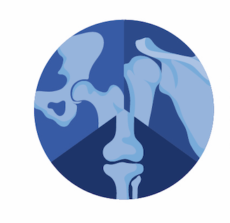

DR. PABLO SANCHEZ OROPEZA.
TRAUMATOLOGIA Y ORTOPEDIA.
C.P. 8894595 /C.E 11580739.
Hospital medica sur, Puente de piedra 150, Toriello Guerra, Tlalpan.
-
2012 – 2013 Internado Internado Rotatorio de pregrado avalado por Hospital Medica Sur en diferentes instituciones como son: Ginecología en HGZ 2A Troncoso; Comunidad en el Hospital la Paz, Madrid, España; Pediatría en el Hospital Pediátrico de Coyoacán; Urgencias, Medicina Interna y cirugía en el Hospital Medica Sur.
-
2013 – 2014 Servicio Social. Centro de Salud Rural Disperso Tapaxco, coordinación del Oro, Jurisdicción Atlacomulco, Estado de México.
-
2015 – 2019 Especialidad de Traumatología y Ortopedia.
Instituto Nacional de Rehabilitación “Luis Guillermo Ibarra Ibarra”
-
2019 - 2020 Alta especialidad en Traumatología Ortopédica y Reconstructiva y Osteosíntesis Avanzada en el Instituto Nacional de Rehabilitación (Pelvis y Acetábulo).
Instituto Nacional de Rehabilitación “Luis Guillermo Ibarra Ibarra”
-
2020 - 2021 Médico especialista en la Unidad Temporal Covid 19 Citibanamex en área de hospitalización y terapia intermedia.
-
2021 – 2022 Maestria en direccion de Instituciones de Salud por la Universidad Panamericana
Cursos y actualizaciones
-
2007 Curso de preparación de 60 horas para el examen TOEFL.
-
2009 Asistencia al primer simposio de medicina virtual.
-
2012 Primer lugar por la presentación de trabajo oral de Ciencias clínicas en la XV Reunión de investigación de la escuela de medicina de la Universidad panamericana con el trabajo titulado “Ataxias hereditarias en población mexicana: correlación genotipo-fenotipo”.
Curso del BLS/ACLS en Enero del 2012
Curso de cuidados paliativos con valor a 40 horas curriculares en Enero del 2012
Rotación en el servicio de medicina interna en el hospital Universitario de la Paz Avalado por la Universidad Autónoma de Madrid
-
2014 Curso de preparación para el Examen Nacional de Aspirantes a Residencias Médicas con valor curricular de 195 horas.
-
2017 Participación en el Curso AO Trauma – Básico de los principios del tratamiento de las fracturas
Asistencia en el taller de prótesis de hombro: Sistema Global Unite.
Participación en la “Jornada quirúrgica de deformidades osteomusculares de pies.
Participación como ponente en las “XII jornadas de médicos residentes del INR LGII”, con el tema tratamiento de fracturas complejas de radio distal: placa volar vs Fijador externo.
-
2018 Participación en la campaña de Artroplastias totales de cadera y rodilla.
Asistencia al congreso Internacional AMECRA, Puerto Vallarta, Jalisco.
Participación como ponente en el congreso internacional de medicina y discapacidad “ Luis Guillermo Ibarra Ibarra” y las XIII jornadas de residentes con el tema Síndrome de Túnel del carpo asociado con la actividad laboral.
Asistencia en el XIII curso de avances en cirugía de columna vertebral
Asistencia En el LXII congreso internacional de Ortopedia y traumatología de la CDMX.
-
2019 Miembro del Consejo Mexicano de Ortopedia (2019-2023)
-
2020 Curso de enclavado centromedular AO Masters.
IX Encuentro de la Sociedad Mexicana de Hombro Codo.
LXIV Congreso Nacional de Ortopedia y Traumatología en Querétaro y participación con presentación de cartel
Curso de enclavado medular en cadáveres de Stryker.
Curso de reanimación básica BLS octubre 2020
Alta Especialidad de Traumatologia Ortopedia Reconstructiva y osteosintesis avanzada en Instituto Nacional de Rehabilitacion Avalado Por la Universidad Nacional Autonoma de Mexico.
-
2021 Curso de lesiones deportivas CONMED avalado por la sociedad Mexicana de hombro y la sociedad Argentina de hombro.
Médico especialista en la Unidad Temporal Covid 19 Citibanamex en área de hospitalización y terapia intermedia.
Diplomado de cuidados paliativos por la fundación Carlos Slim.
Miembro del Colegio Mexicano de Ortopedia.
Miembro de la Sociedad Mexicana de Hombro y Codo.
Diplomado De Marketing Digital y psicomarketing por la Universidad Panamericana.
Curso de cuidados paliativos en pediatria y perinatologia por la fundación Carlos Slim.
Maestria de Direccion de Instituciones de salud por la Universad Panamericana (Jul 2021 diciembre 2022).
Alta Especialidad de Lesiones deportivas y artroscopia en el hospital Angeles Metropolitano avalada por la Universidad Nacional autonoma de Mexico.
-
2022 Aceptacion para publicacion del trabajo “Uso de Abordaje Superolateral para artroplastia reversa de hombro en paciente con fractura de Humero proximal”.
Ganador de Segundo lugar de tabajos libres en el Congreso de la sociedad Latinoamericana de Cirujanos de Hombro y codo con el trabajo “ Manejo ambulatorio de Artroplastia de Hombro”